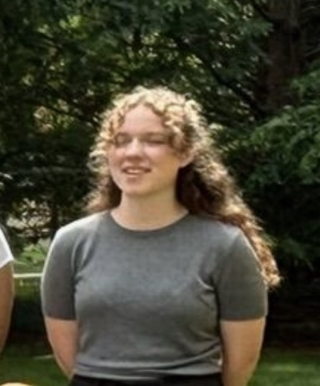
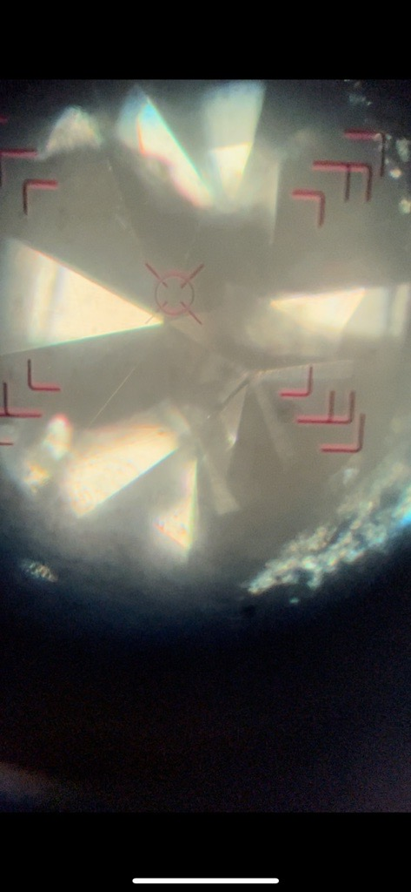

Physics BS and Math BS at University of Florida doing research in condensed matter physics
I am a senior at the University of Florida pursuing dual Bachelor of Science degrees in Physics and Mathematics. My academic journey began early, completing my AA in high school allowed me to dive into upper-level coursework from my first semester at UF, accelerating my path into research. I am currently a member of the Hamlin Lab in the UF Physics department, where I work in experimental condensed matter physics. My research involves growing crystals and taking measurements on them. I plan to continue in this line of work at the graduate level, with the goal of pursuing a PhD in condensed matter physics.
The Hamlin Lab focuses on growing and characterizing novel crystalline materials to understand their physical properties under extreme conditions, including high pressures and low temperatures.
I grow single crystals using flux growth methods and characterize them through X-ray diffraction (XRD), resistivity measurements, and other property measurements. I also keep up with equipment maintenance and repairs as needed.

B.S. Physics | B.S. Mathematics — University of Florida